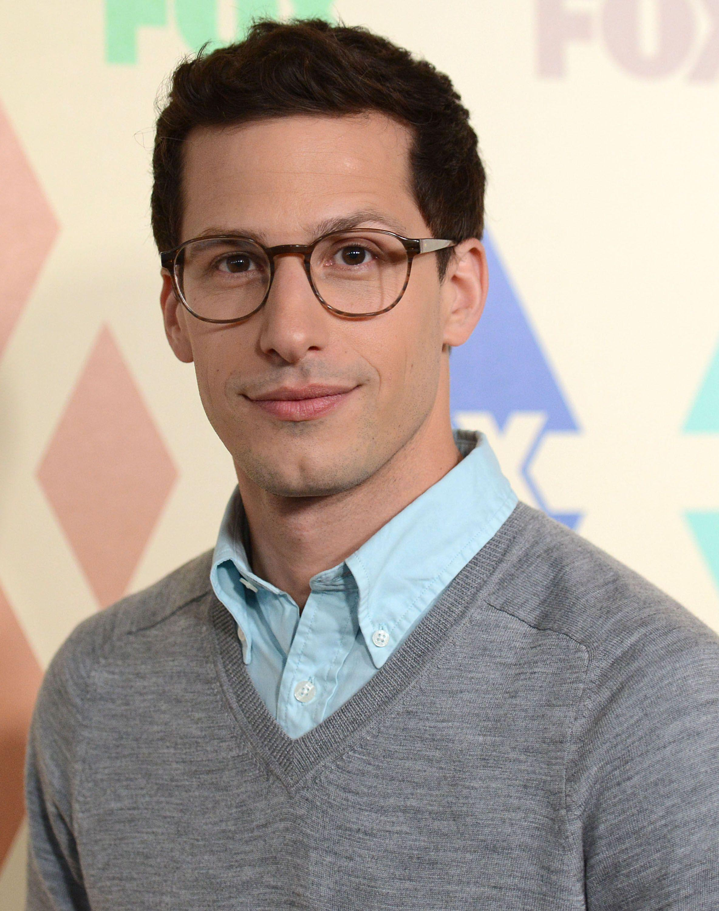
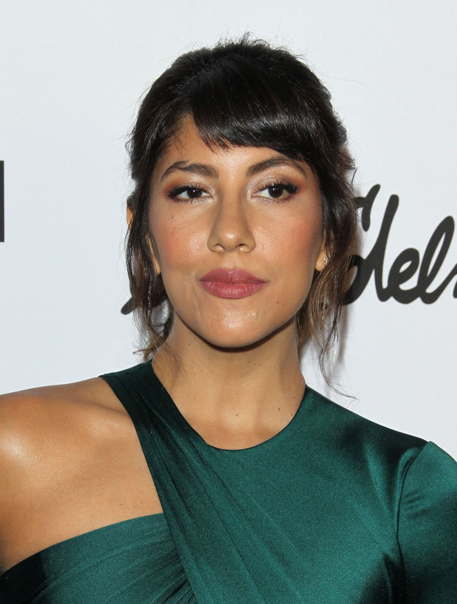
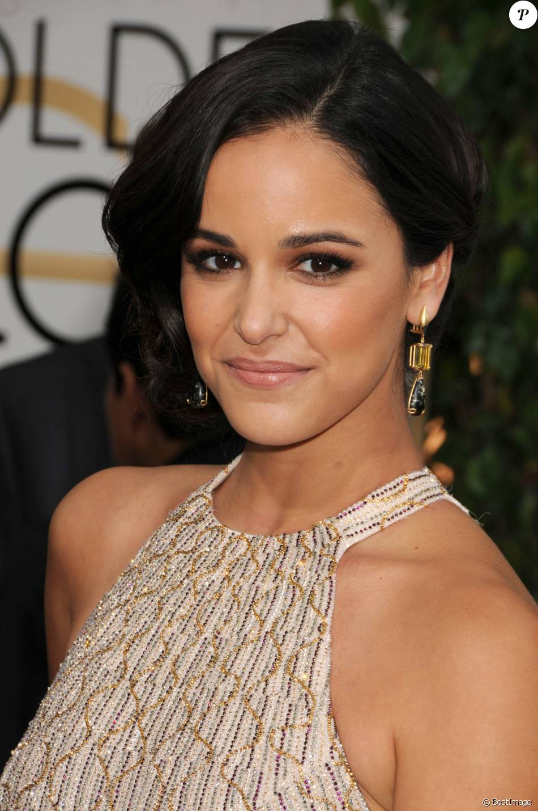
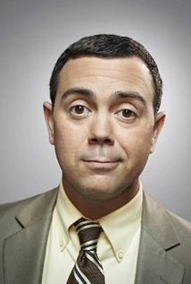
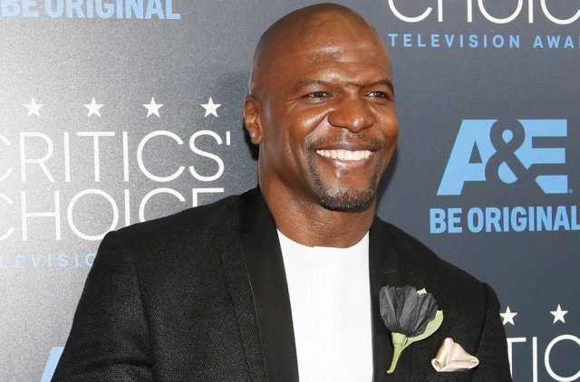
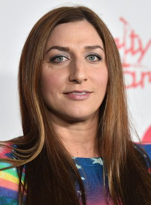
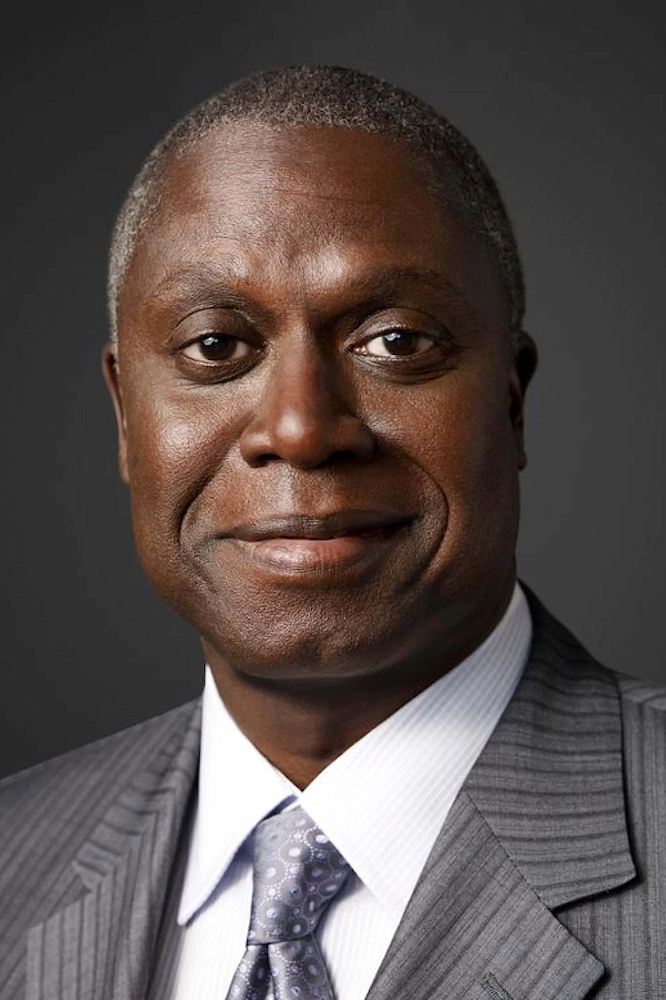
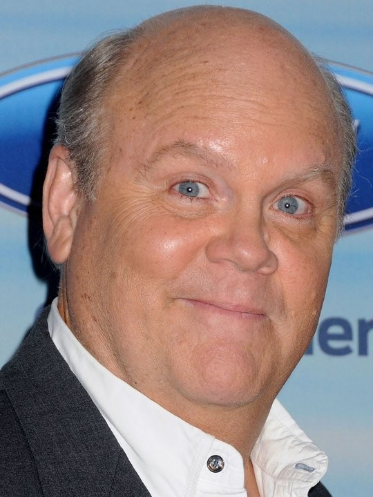
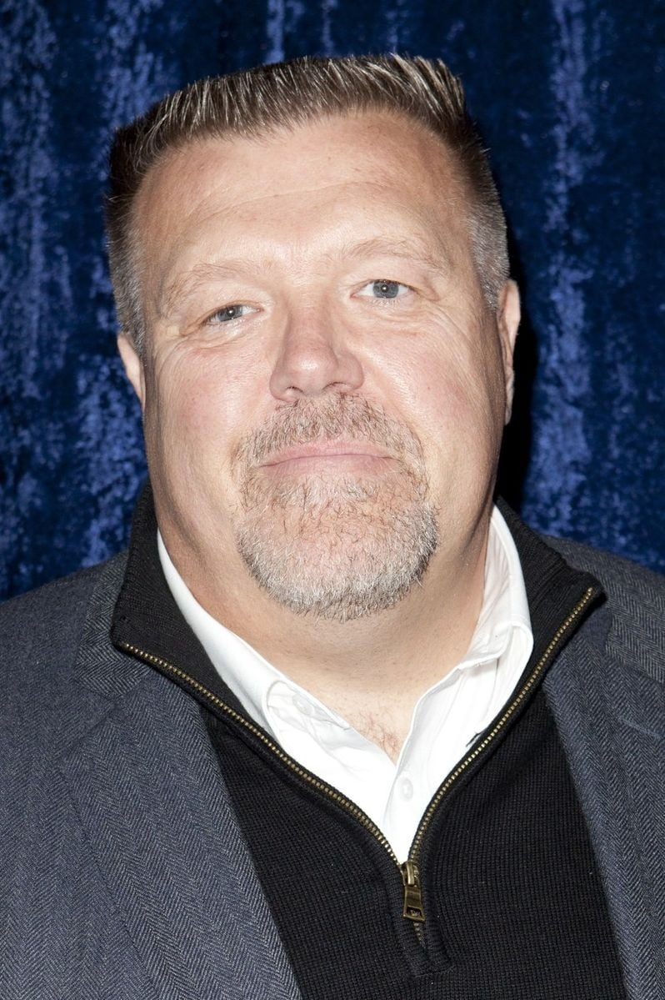

Andrew David Samberg nascido no 18 de agosto de 1978 e ator, comediante, produtor e musico norte-americano. tornou-se conhecido pelo seu trabalho como escritor e ator do humoristico no Saturday Night Liveentre 2005 e 2012, e tanbem por ser membro do grupo de comedia the lonely island, ao lado de seus colegas de grupo Akiva Schaffer e Jorma Tacone

Stephanie Beatriz nascida em 10 de fevereiro de 1981 e uma atriz argentina-americana. Ela e mais conhecida por interpretar detetive Rosa diaz na serie de televisao brooklyn nine-nine, da NBC. Alem de estrelar como bonnie no filme "A Luz da Lua e como maribel em "Encanto

Melissa Fumero e uma atriz americana nascida no dia 19 de agosto de 1982 , que ficou conhecida por intepretar adriana cramer em On life to life, Zoe em Gossip Gril, e Emy santiago em brooklyn nine-nine

Joseph Vincent Lo Truglio (nascido em 2 de dezembro de 1970) é um ator, comediante, escritor e produtor americano. Mais conhecido por seu papel como Charles Boyle no seriado da Fox / NBC Brooklyn Nine-Nine , ele também foi membro do elenco das séries de televisão The State e Reno 911! . Seus papéis notáveis no cinema incluem Wet Hot American Summer , I Love You Man , Superbad , Paul ,Modelos e Wanderlust .

Terrence Alan Crews, conhecido como Terry Crews (Flint, 30 de julho de 1968), é um ator, apresentador, dançarino, ilustrador, ativista e ex-jogador de futebol americano. Ganhou notoriedade mundial ao participar da comédia As Branquelas (2004), e em seguida, do seriado Todo Mundo Odeia o Chris (2006–2009). Crews também ficou conhecido por seus papéis nos filmes Idiocracia (2006) e na franquia Os Mercenários (2010–2014). Crews estrelou o reality show The Family Crews (2010-2011) e apresentou a versão americana do game show Quem Quer Ser Milionário de 2014 a 2015.

Chelsea Vanessa Peretti (nascida em 20 de fevereiro de 1978) é uma comediante, atriz, escritora de televisão, cantora e compositora americana. Ela é mais conhecida por interpretar Gina Linetti na série de comédia Brooklyn Nine-Nine e escrever para Parks And Recreation e Saturday Night Live .

Andre Braugher (Chicago, 1 de julho de 1962) é um ator estadunidense, conhecido por interpretar os personagens Raymond Holt na série de comédia Brooklyn Nine-Nine, Thomas Searles no filme Tempo de Glória, Frank Pembleton na série criminal Homicide: Life on the Street, e Owen Thoreau Jr. em Men of a Certain Age. Também fez uma participação na série House, M.D. como Dr. Nolan.

Dennis Dirk Blocker (nascido em 31 de julho de 1957) é um ator americano. Ele ganhou seu primeiro papel regular na TV em Baa Baa Black Sheep (1976-1978), interpretando o piloto Jerry Bragg. De 2013 a 2021, ele estrelou como o detetive Michael Hitchcock na série de comédia da Fox / NBC Brooklyn Nine-Nine .

Joel McKinnon Miller (nascido em 21 de fevereiro de 1960) é um ator americano que é mais conhecido por interpretar Don Embry em Big Love e Detective Norm Scully em Brooklyn Nine-Nine .